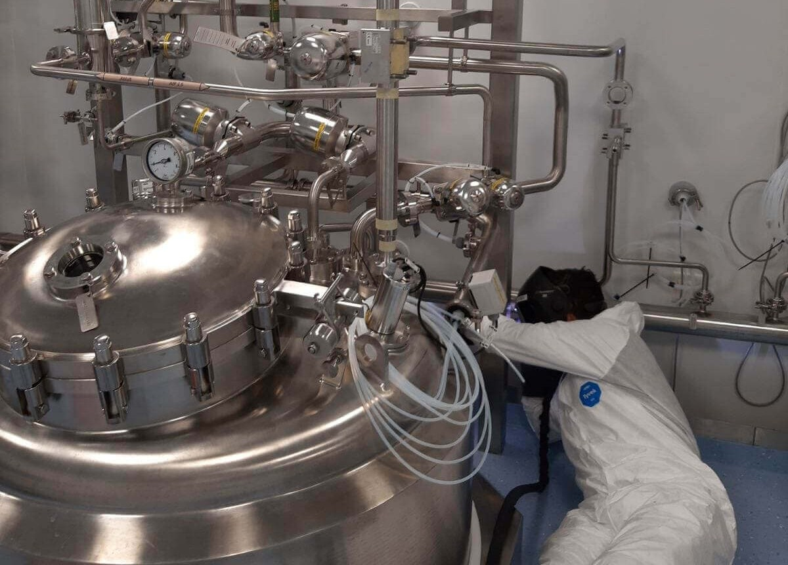
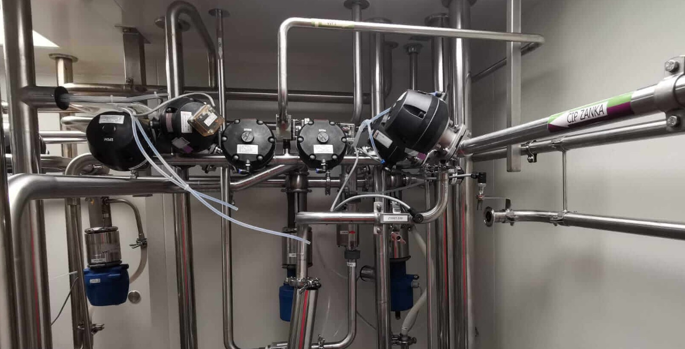
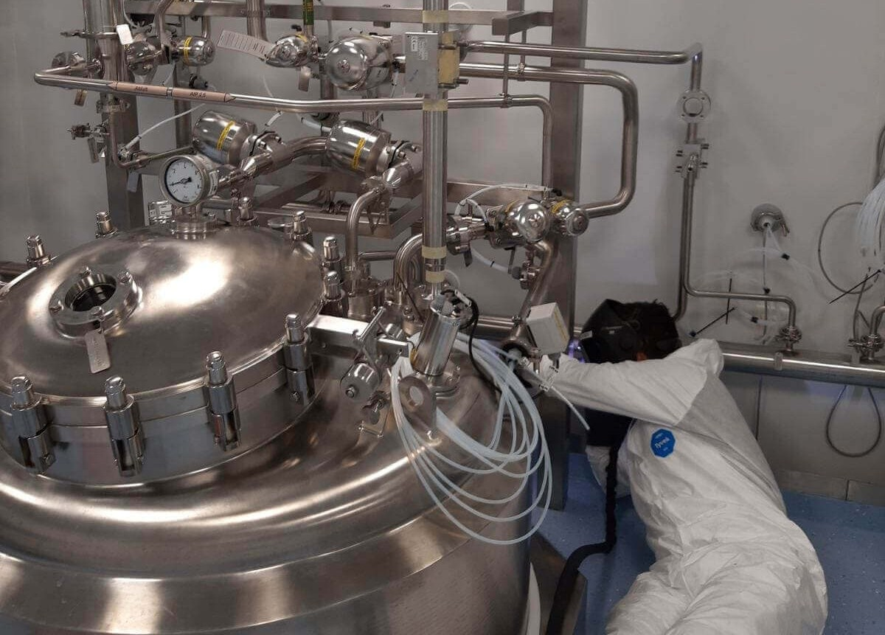
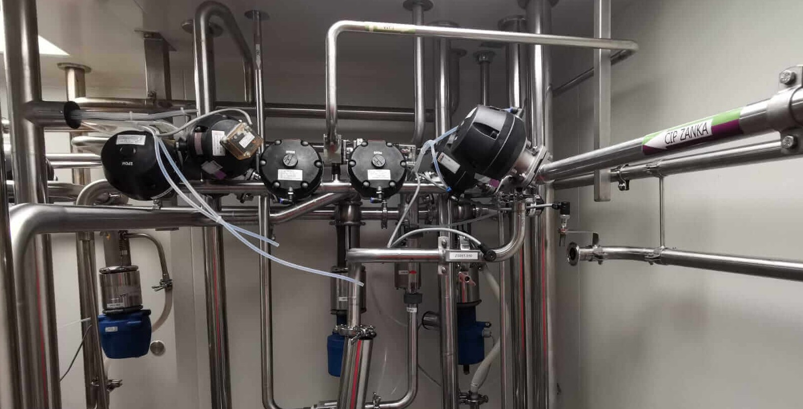

PHARMAZEUTISCHE UND BIOPHARMAZEUTISCHE INDUSTRIE
Als Technologieanbieter für die Biotechnologie- und Pharmaindustrie entwerfen, fertigen und installieren wir passende Lösungen für renommierte und angesehene Unternehmen weltweit.
Wir bieten unseren Kunden prozess- und betriebskonforme Dienstleistungen sowie zentrale Elemente für die professionelle Umsetzung von Projekten – alles aus einer Hand. Unsere Experten mit langjähriger Erfahrung in allen entscheidenden Bereichen gewährleisten die systematische Erreichung der gesetzten Ziele.
PROZESSBEHÄLTER
Alle Behälter bestehen aus Edelstahl und sind sowohl als Einzelkomponenten als auch als vollautomatisierte Prozesssysteme erhältlich, wie z. B. Mischer, Homogenisatoren, Behälter mit vollständiger Messtechnik, Steuereinheiten, Ventilen und Rohranschlüssen. Auch Versionen für den Betrieb in explosionsgefährdeten Bereichen sind verfügbar. Unsere Produkte entsprechen der Druckgeräterichtlinie und sind in bestimmten Fällen nach der ATEX-Norm zertifiziert.
SKID-SYSTEME
In unserer Metallbearbeitungssparte spezialisieren wir uns auf die Entwicklung und Fertigung von SKID-Systemen, die robuste Metallstrukturen und technologische Ausrüstung zu modularen Einheiten kombinieren. Unsere SKID-Systeme gewährleisten einfachen Transport, schnelle Montage und eine effiziente Integration in verschiedene Industrieprozesse.
▼
Unsere SKID-Systeme sind auf Flexibilität, Robustheit und technologische Effizienz ausgelegt, was ihren Einsatz in verschiedenen Industriesektoren ermöglicht. Die wichtigsten Vorteile unserer SKID-Systeme sind:
Modulares Design:
- Ermöglicht einfache Aufrüstungen oder Anpassungen entsprechend den spezifischen Kundenanforderungen.
- Reduziert Renovierungskosten und verkürzt die Implementierungszeit neuer Prozesse.
Robuste Konstruktion:
- Hochwertige Materialien und präzise Verarbeitung gewährleisten eine lange Lebensdauer.
- Das Design erfüllt alle Qualitäts- und Sicherheitsstandards und sorgt für einen zuverlässigen Betrieb, auch in anspruchsvollen Industrieumgebungen.
Fortschrittliche Technologieintegration:
- Enthält Sensoren zur Prozessüberwachung, automatisierte Steuersysteme und Anbindung an industrielle Informationssysteme (SCADA, MES).
- Ermöglicht präzise Steuerung, schnelle Fehlererkennung und Optimierung der Produktionsprozesse.
Einfache Transport- und Montagefähigkeit:
- Die modulare Einheit ermöglicht eine schnelle Verlagerung und Integration vor Ort beim Kunden.
- Reduziert die Montagezeit und minimiert Produktionsausfallzeiten.
Einfache Wartung:
- Praktisches Design ermöglicht eine schnelle Wartung einzelner Komponenten.
- Verlängert die Lebensdauer des Systems und senkt die Betriebskosten.
Umfassender Kundensupport:
- Wir bieten Unterstützung von der Konzeptentwicklung, Prototypenfertigung und Tests bis hin zur Montage und Wartung.
- Jedes SKID-System wird auf die spezifischen Anforderungen einzelner Produktionsprozesse optimiert.
 



WIP-CIP-SIP EINHEITEN
Ein wesentlicher Bestandteil einer hochwertigen Produktion ist ein integriertes WIP/CIP/SIP-System. Btinox gewährleistet effiziente und termingerechte Reinigungs- und Sterilisationsverfahren, die den Kundenanforderungen entsprechen. Wir bieten ein breites Spektrum an Lösungen – von mobilen und eigenständigen Reinigungssystemen bis hin zu integrierten CIP-Satellitensystemen.
▼
CIP- und SIP-Systeme sind für die automatische Grundreinigung und Desinfektion konzipiert, ohne unnötige Zeit für Montage und Demontage zu verlieren.
Die Prozessoptimierung hängt von einer effektiven und zuverlässigen Reinigung ab. CIP-Systeme können in die gesamte pharmazeutische Ausrüstung integriert werden, einschließlich Feststoff- und Flüssigkeitsdosiersystemen. Die Automatisierung der Reinigungsprozesse gewährleistet Wiederholbarkeit, ermöglicht Validierung und reduziert Ausfallzeiten.
Die effektivste Methode zur Implementierung der CIP-Technologie besteht in ihrer geplanten Integration in den Prozess. Bei der Einbindung von Sprühsystemen, Tankreinigern, Düsen und Dichtungen für die Reinigungsautomatisierung berücksichtigen wir alle Teile Ihres Systems – vom Zulauf bis zur Entleerung.
Die Automatisierung des Reinigungszyklus verwandelt primär batchbasierte pharmazeutische Prozesse in einen kontinuierlichen Betrieb von Produktions- und Reinigungszyklen.
Die Vorteile eines CIP-Systems umfassen:
- kürzere Reinigungszyklen
- optimierter Einsatz von Reinigungsmitteln und Wasser
- Eliminierung der manuellen Reinigung
Unsere Rahmen für CIP-/WIP-Systeme werden konzipiert, konstruiert, automatisiert und getestet. Dieser umfassende Ansatz gewährleistet offene Kommunikation zwischen Experten und schnelle Reaktion auf Abweichungen während des Projekts. Jedes Projekt wird von einem Projekt-/Prozessingenieur betreut, der professionell Diskussionen zu spezifischen Anforderungen, Systemintegration und den finalen FAT-Protokollen überwacht.
BIOREAKTOREN-FERMENTER
Auf Basis unserer umfangreichen Erfahrung in der Konstruktion, Fertigung, Inbetriebnahme und Validierung pharmazeutischer Anlagen, die auf spezifische Benutzeranforderungen zugeschnitten sind, haben wir eine zusätzliche Produktlinie entwickelt.
▼
Bioreaktor- und Fermentersysteme stellen den Höhepunkt unserer Expertise dar und werden vollständig in unseren Einrichtungen hergestellt. Sie verfügen über ein steriles Design, das den cGMP-Richtlinien entspricht, sowie Konstruktion, Montage und Implementierung durch unsere Elektro- und Automatisierungsabteilung, die die Anlagen in Betrieb nimmt und exzellente Leistung für Kunden in der Biotechnologiebranche sicherstellt.


HEIZ- UND KÜHLSYSTEME
Temperaturkontrolle und Produktmischung während des Prozesses sind entscheidend, um erfolgreiche und wiederholbare Ergebnisse zu erzielen.
Btinox stellt sicher, dass die Produkttemperatur im Behälter innerhalb eines engen Bereichs (+/- 0,5 °C) bleibt, um unerwünschte Veränderungen des Produkts während der Produktion zu verhindern. Wir erreichen ein hohes Maß an Temperaturkontrolle und Produkt-Homogenität durch den Einsatz modernster Wärmetauschtechnologie und sorgfältiges Mischen. Präzise Messgeräte überwachen während des gesamten Prozesses alle wichtigen Parameter wie pH-Wert, O₂, Temperatur und Mischgeschwindigkeit.
GMP-MEDIEN
Wir entwerfen, installieren, nehmen in Betrieb und validieren Produktionsprozesse, Betriebsbedingungen sowie die Wartung von Lager- und Vertriebssystemen und gewährleisten dabei die entsprechende Qualität der Medien.
▼
Die Pharma-, Biotechnologie-, Lebensmittel- und Chemieindustrie verlangen die höchsten Standards für hochwertige Rohrleitungssysteme.
Exzellente Organisation, langjährige Erfahrung, modernste Ausrüstung und kontinuierliche Optimierung verschiedener Schweißtechniken sind der Schlüssel für eine erfolgreiche Projektdurchführung. Unsere Mission ist es, sicherzustellen, dass all diese Bedingungen für unsere Kunden erfüllt werden.
Der Kunde steht im Mittelpunkt all unserer Aktivitäten. Unsere Dienstleistungen umfassen die Planung, Koordination, Montage und Dokumentation von Prozesssystemen sowie Inspektionen zur Sicherstellung von Qualität und reibungsloser Inbetriebnahme.
Neben Edelstahlkonstruktionen, Rahmen und Sonderkomponenten bieten wir unseren Kunden auch vollständig vormontierte Einheiten an.
Um ausreichende Mengen an Wasser gemäß USP- und Ph. EUR-Standards sicherzustellen, muss die Wasseraufbereitung spezifische Anforderungen erfüllen. Zahlreiche Vorschriften und Normen müssen beachtet werden, da das Wassersystem strenger Überwachung und Inspektionen unterliegt. Wir sorgen dafür, dass all diese Anforderungen erfüllt werden.
Basierend auf Ihren Anforderungen entwerfen, montieren, liefern und installieren wir ein System zur Lagerung von heißem (WFI) oder kaltem (PW) Wasser. Jeder Probennahmepunkt im Kreislauf kann mit einem Probenahmeventil und Anschlüssen für die Kreislaufsterilisation ausgestattet werden. Die erforderliche Messtechnik für Durchfluss und TOC ist als Standardausstattung enthalten. Alle Einheiten, die für die Herstellung von gereinigten Medien erforderlich sind, sind in diese Systeme integriert.


AUTOMATION
Automatisierung bedeutet mehr als nur Programmierung und Elektrotechnik. Neben unserer Expertise in der Automatisierung erfordert diese Technologie auch ein tiefes Verständnis der Verfahrenstechnik und Produktionsanlagen sowie umfangreiche Erfahrung bei der Erfüllung von Anforderungen.
▼
Btinox bietet modernen pharmazeutischen Produktionsanlagen Automatisierungslösungen für die gesamte Prozesskette – von höheren bis zu niedrigeren Ebenen und von eigenständigen Systemen einzelner Stationen (SKID-Einheiten) bis hin zu komplexen zentralen Prozessleitsystemen.
Verschiedene Prozesse in der Lebensmittelindustrie, wie z. B. die Milchproduktion, werden an die Herstellung unterschiedlicher Milchprodukte angepasst.
Dementsprechend ist auch die Automatisierung dieser Prozesse ebenso vielfältig und mehrschichtig.
KONZEPTION – VALIDIERUNG – DOKUMENTATION
Planung aller vorgenannten Prozesse, Erstellung von Basis- und Detailplänen, Material- und Arbeitsspezifikationen, URS, 3D-Modellierung, Fertigung, detaillierte Produktionspläne, As-Built-Zeichnungen/-Projekte, technische Dokumentation, Validierungsdokumentation sowie Durchführung der Validierung.
▼
Erstellung und Durchführung von Projekten und Anlagen gemäß ATEX. Automatisierung all dessen, einschließlich elektrischer Anschlüsse, Projekt- und technischer Dokumentation sowie Validierungsdokumentation und deren Durchführung.
Wir gewährleisten die Einhaltung von GxP und anderen behördlichen Anforderungen (FDA, EMA usw.) sowie die Beachtung der geltenden Normen beim Bau und der Modifikation kompletter Anlagen oder einzelner Komponenten in der pharmazeutischen Industrie.
Jahrelange Erfahrung, kontinuierliche Schulung und Expertise in der Pharmaindustrie ermöglichen es uns, Qualifikationen umfassend und in höchster Qualität durchzuführen.